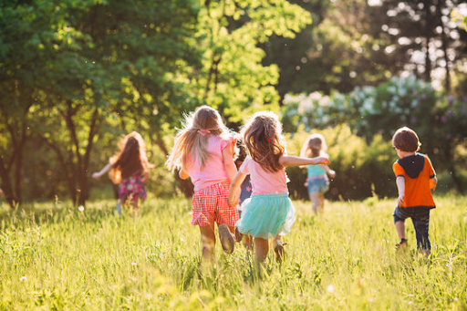

Residential Care for Children
Christ-centered homes offering emergency, short-term, and long-term care for trauma-impacted children.
Learn more →Healed Children, Heal the World.
We provide Christ-centered care for children from birth to age 14 who have experienced neglect, sexual abuse, or assault. Offering a safe place where they can live, heal, grow, learn, and be cared for.
Christ-centered homes offering emergency, short-term, and long-term care for trauma-impacted children.
Learn more →Walking alongside parents and caregivers through community, encouragement, and practical support.
Learn more →Healing through creative expression, worship, and education that strengthens families and communities.
Learn more →“Sunday” represents a fresh start, a day of rest, worship, and hope. “Farm” represents growth, cultivation, and love taking root. Together, they reflect our mission to raise healthy, whole children who expereince the love of Jesus through caring adults.
Our Story